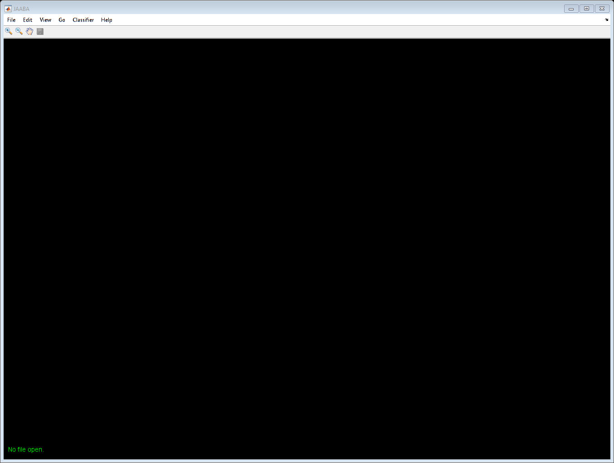

% JAABA start up script. % % This program is part of JAABA. % % JAABA: The Janelia Automatic Animal Behavior Annotator % Copyright 2012, Kristin Branson, HHMI Janelia Farm Resarch Campus % http://jaaba.sourceforge.net/ % bransonk@janelia.hhmi.org % % This program is free software: you can redistribute it and/or modify % it under the terms of the GNU General Public License as published by % the Free Software Foundation, either version 3 of the License, or % (at your option) any later version. % % This program is distributed in the hope that it will be useful, % but WITHOUT ANY WARRANTY; without even the implied warranty of % MERCHANTABILITY or FITNESS FOR A PARTICULAR PURPOSE. See the % GNU General Public License (version 3 pasted in LICENSE.txt) for % more details. SetUpJAABAPath; try if verLessThan('matlab','8.3.0.532') nthreads = SetUpMatlabPool(); else nthreads = SetUpParPool(); end catch ME warning('Could not set up matlabpool: %s',getReport(ME)); nthreads = struct; end % Start JAABA. JLabel('nthreads',nthreads);
Number of threads allocated for computation: 9 Number of threads allocated for display: 1 Starting parallel pool (parpool) using the 'local' profile ... Connected to the parallel pool (number of workers: 9).